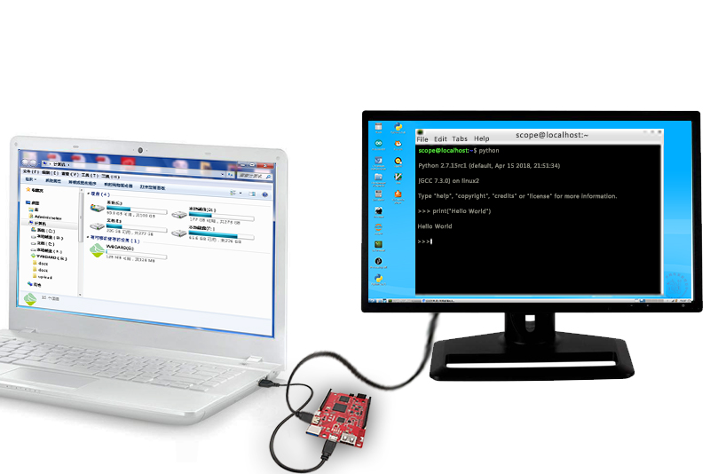

5. 混合模式¶
混合模式即同时使用U盘模式和电脑模式（无线模式）。混合模式一般用于在U盘模式下编写代码，又希望能够看到虚谷号内部的运行日志，帮助用户解决问题。
5.1. 应用场景¶
一般而言，谁都不喜欢直接在虚谷号之类的迷你电脑上编写代码，因为迷你电脑上缺少用户习惯的编辑器，也缺少一些常用的工具软件，代码库，而且很多用户本来对Linux就不熟悉，操作也不习惯。
在虚谷号的多种工作模式中，我们希望更多的人使用混合模式。即用户就可以选择在自己熟悉的电脑上编写代码，用U盘模式运行代码，然后通过无线和主机模式查看信息。
这种模式特别适合用于创客空间中，学生用虚谷号制作各种创客作品。
哪些模式可以混合使用
U盘模式+无线模式。
U盘模式+主机模式
无线模式+主机模式
……
5.2. 通过混合模式可以做什么¶
互补U盘模式和电脑模式的操作的缺陷。
电脑模式可以看到U盘模式里Python运行过程
电脑模式可以不用连接键盘鼠标，使用U盘模式进行编程
可以快捷的将windows或者mac的文件传输到虚谷号上
5.3. 混合模式注意事项¶
使用混合模式时，电脑模式桌面的 vvBoard文件夹不能够进行写入、修改的操作，只能读取。